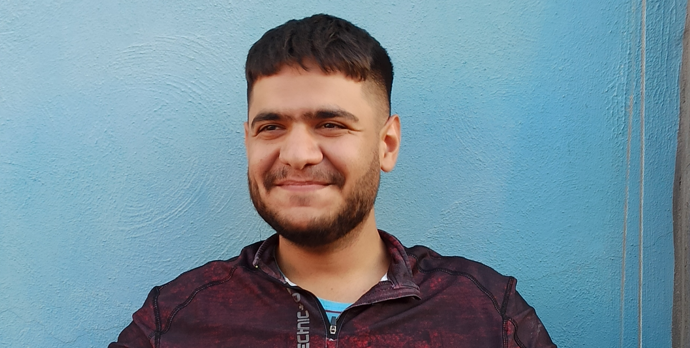

SATI
the
DEVELOPER


Mohammad. H
Satari
Satari
Known as sati parpar
I'm all about making the world a brighter place,
diving into coding adventures, teaming up for success, dreaming up new startup possibilities, embracing challenges, lending a hand, and spreading knowledge wherever I go!
And hey! you wouldn't believe how much joy I find in exploring the fascinating world of blockchain and DAOs.
diving into coding adventures, teaming up for success, dreaming up new startup possibilities, embracing challenges, lending a hand, and spreading knowledge wherever I go!
And hey! you wouldn't believe how much joy I find in exploring the fascinating world of blockchain and DAOs.
I am a ...
QA Engineer

I'm experienced in writing unit tests,
integration tests ( using Jest ), and thoroughly testing the logic manually.
I'm also skilled at anticipating and handling bad user actions and edge cases.
No matter how tidy and safe your code may be, I'm here to uncover those hidden challenges and ensure everything runs smoothly 😊.
integration tests ( using Jest ), and thoroughly testing the logic manually.
I'm also skilled at anticipating and handling bad user actions and edge cases.
No matter how tidy and safe your code may be, I'm here to uncover those hidden challenges and ensure everything runs smoothly 😊.
Back-End Developer
Ongoing Studies ...
Solidity / Smart Contracts
I'm currently learning Solidity, and I'm absolutely fascinated by smart contracts and how they interact with the Ethereum Virtual Machine (EVM).
I want to use the knowledge I've gained from backend development and my research into blockchain technology to develop smart contracts. Right now, I'm diving deep into my studies and working hard to master this new skill.
I want to use the knowledge I've gained from backend development and my research into blockchain technology to develop smart contracts. Right now, I'm diving deep into my studies and working hard to master this new skill.
Deutsch als Fremdsprache !
I'm on a new journey of learning a language, but this time it’s not a programming one!
I’m learning German so I can speak it fluently. Right now, I’m at the B1 level and working hard to improve my language skills.
I’m learning German so I can speak it fluently. Right now, I’m at the B1 level and working hard to improve my language skills.
MORE ABOUT SATI
At 18, after earning my high school diploma in biological sciences, I entered the job market. Three years later, I joined the military for my mandatory service.
It was midway through my service that I started thinking programming might be something I'd find interesting—and it turned out to be true. While fulfilling my duties in the military, I began learning programming, seizing every opportunity to expand my coding knowledge.
Python was my starting point. My passion and enthusiasm were so intense that within a year, I was able to work as a freelancer. I landed my first project on Karlancer ( an Iranian freelancing site ), where I developed the backend of a shopping website using Django.
Two months later, in an unexpected twist, I met people who completely transformed my career path. They were looking for someone to train as a QA Engineer and involve in their projects.
But it wasn’t that easy...
To secure this position, I had to complete a task within a week—a challenging but exciting opportunity.
I had to thoroughly study the logic and objectives of the 3D Governance model from Pocket Network and identify at least six edge cases. Additionally, I needed to write a script using TypeScript.
During that time, I realized:
If a task is supposed to be done in a week, it takes a week, and if it is supposed to be done in a month, it takes a month.
It was midway through my service that I started thinking programming might be something I'd find interesting—and it turned out to be true. While fulfilling my duties in the military, I began learning programming, seizing every opportunity to expand my coding knowledge.
Python was my starting point. My passion and enthusiasm were so intense that within a year, I was able to work as a freelancer. I landed my first project on Karlancer ( an Iranian freelancing site ), where I developed the backend of a shopping website using Django.
Two months later, in an unexpected twist, I met people who completely transformed my career path. They were looking for someone to train as a QA Engineer and involve in their projects.
But it wasn’t that easy...
To secure this position, I had to complete a task within a week—a challenging but exciting opportunity.
I had to thoroughly study the logic and objectives of the 3D Governance model from Pocket Network and identify at least six edge cases. Additionally, I needed to write a script using TypeScript.
During that time, I realized:
If a task is supposed to be done in a week, it takes a week, and if it is supposed to be done in a month, it takes a month.
Those people and that company are Pattern ( previously known as Microflow ), and since December 2023, I am working with these amazing people as QA Engineer and Back-End Developer.
CONTACT
Let's be in contract !
satiparpar.com@gmail.com
(0098) 901 972 4868